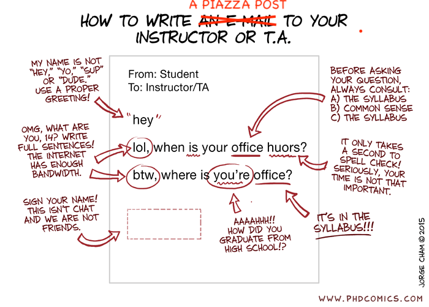

CAS CS 630 - Graduate Algorithms - Fall 2026
Course Staff
| Instructors |
Prof. Dora Erdös Prof. Tiago Januario |
| Teaching Fellow |
Pooria Jalali |
| Grader |
Jerin Joseph |
Communication and Office hours
- Piazza is the primary platform for all online discussions, questions, and answers.
- Use Piazza for all course communication. Use private Piazza posts for personal matters. Email should be reserved for situations where Piazza is unavailable or inappropriate.
- Your suggestions for improving the course are always encouraged and appreciated.

- Check our Google Calendar for our Office hours.
Course description
This course examines advanced algorithmic topics and methods for CS graduate students, including NP-hard problems, approximation techniques, probabilistic algorithms, and algorithms for very large data sets.
The course builds on undergraduate algorithms, including algorithm design, correctness proofs, and running-time analysis.
Intended audience: MS and advanced BA students. PhD students should take CS530 instead.
Prerequisites
Students should have completed an algorithms course at the level of CS330: Introduction to Analysis of Algorithms.
Expected background includes:
- Proof techniques, e.g. direct proof, proof by contradiction, induction
- Asymptotic analysis of running time, i.e. big-Oh
- Algorithm design paradigms, such as greedy, divide and conquer, dynamic programming, and graph algorithms
- Data structures, e.g. lists, queues, heaps, hash tables, trees, graph adjacency lists
If you are unsure whether you have the required background, contact the instructor.
Course platforms
- Piazza: Used for announcements, Q&A, discussion, lecture notes, general information, additional materials, and logistics.
- Gradescope: Used for worksheet submission, quiz/exam grading, and regrade requests.
- [https://www.gradescope.com/courses/1377497]
- Entry Code: K8YW73
- Anki: Used for studying flashcards with short definitions. You can download a free app at the following link.
The course Anki deck will be posted on Piazza and updated throughout the semester. Quiz questions may draw from posted flashcards.
Textbooks and Resources
There is no single required textbook. Readings will be posted on Piazza or the course website before lectures. Students are encouraged to consult additional public resources. The readings are useful, but they are not a substitute for attending lecture and lab.
Recommended references:
- KT - Algorithm Design, by Kleinberg and Tardos
- CLRS - Introduction to Algorithms, by Cormen, Leiserson, Rivest, and Stein
- DPV - Algorithms, by Dasgupta, Papadimitriou, Vazirani
- V - Approximation Algorithms, by V. Vazirani
- WS - The Design of Approximation Algorithms, by Williamson and Shmoys
- Randomized Algorithms, by Rajeev Motwani and Prabhakar Raghavan
- A First Course in Randomized Algorithms, by Nick Harvey
For prerequisite review:
- Algorithms Illuminated, by Tim Roughgarden (the 4th part of the book also contains material on NP)
- Algorithms, by Jeff Erickson
- Mathematics for Computer Science by Eric Lehman, Tom Leighton, and Albert Meyer - Useful background on discrete mathematics.
- Introduction to Probability, Statistics and Random processes, by H. Pishro-Nik
Course Structure
-
Lectures: Led by one of the two instructors, Prof. Erdös or Prof. Januario.
- Meetings: Tuesdays and Thursdays, 75 minutes each.
- Attendance: Mandatory and tracked through graded worksheets.
-
Discussion Labs: Led by the Teaching Fellow.
- Meetings: Wednesdays, 50 minutes each.
- Attendance: Mandatory, with occasional graded quizzes.
- Office hours: We will hold multiple office hours throughout the week. The exact office hour schedule is available in the calendar.
Some material covered in lecture and lab may not be in our textbooks. You are in all cases responsible to be up-to-date on the material.
Course atmosphere, diversity and inclusion
Class participation and questions are very much encouraged. Please ask as many questions in class, labs and on Piazza as you need. Chances are that your question and answer will be as helpful to your classmates as to you.
We intend to provide a positive and inclusive atmosphere in class and on the associated virtual platforms. Students from a wide range of backgrounds and with a diverse set of perspectives are welcome. We ask that students treat each other with thoughtfulness and respect, and do their part to make all their peers feel welcome. Your suggestions are encouraged and appreciated. Please let us know ways to improve the effectiveness of the course for you personally or for other students or student groups.
If you require particular accommodations for exams or coursework, please contact the instructor (and forward any relevant documentation from Disability and Access Services) in a timely manner. If you are facing unusual circumstances during the semester, please reach out to us early on so that we can find a good arrangement.
Grading
The course grade will be calculated as follows:
| Component | Weight |
|---|---|
| Worksheet completion | 16% |
| In-class midterm exam | 20% |
| Final exam during finals week | 20% |
| Quizzes | 44% |
Exam policies
Both exams will consist of problem-solving and short questions about the course material.
- The duration and location of each exam are given in the course schedule.
- The midterm exam will be during class time and takes 75 minutes, tentatively scheduled for Tuesday, October 27.
- The final exam is 120 minutes, scheduled during the University-assigned final exam slot.
- The content of the final exam is cumulative.
- Exams are closed-book and closed-note unless otherwise announced. Phones, smartwatches, laptops, and other electronic devices are not permitted.
- No collaboration whatsoever is permitted on exams; any violation will be reported to the College.
- Students must score at least 40% on both the midterm and final exams to pass the course. This will be strictly enforced.
- Makeup exams will only be given in documented cases of serious illness.
- Exam regrade requests must be submitted through Gradescope within 7 days of grades being posted.
- Incompletes for this class will be granted according to CAS Policy.
- Do not make any travel plans before knowing all dates of your final exams.
Worksheet policies
In-class worksheets give you a structured way to practice concepts and test your understanding during lecture; therefore, your presence in class is mandatory. Most of the questions covered in worksheets can be found in our textbooks and slides. Read them!
- Printed and online versions of the worksheets will be made available on the day of each lecture.
- Peer collaboration is strongly encouraged for in-class worksheets.
- Once completed, worksheets must be submitted electronically through Gradescope no later than 2:00 PM on the day of the lecture.
- Submit worksheet solutions as one single PDF file with high-quality images.
- Worksheets will be graded by completion, provided that you have clearly attempted to solve them. Writing "I don't know" does not count as a valid attempt.
- You will get full worksheet points at the end of the semester if you complete at least 80% of the worksheets.
- If you end up with x% points, where x < 80, you will get x/80 of the worksheet points.
- There are no makeup worksheets except in cases required by university policy or approved accommodations. Completing 80% of the worksheets is sufficient to receive full credit, which is intended to cover any absence due to illness, travel delays, or emergencies.
Quiz policies
In-class quizzes will be used to measure your true individual understanding and provide clear feedback on what you are actually learning.
- There will be 5 quizzes during lab sections. The dates of the quizzes are posted on the schedule.
- Quizzes will be held in labs and will last 20 minutes.
- The quizzes are all cumulative and will feature short written questions based on class material, textbooks, flashcards, practice problems, or a mix of these sources.
- Quizzes are closed-book and closed-note unless otherwise announced. No electronic devices are permitted.
- Submitting partial work is acceptable if you cannot fully complete a quiz.
- The lowest quiz grade will be dropped.
- After dropping the lowest quiz, the remaining quizzes are weighted equally.
- There are no makeup quizzes except in cases required by university policy or approved accommodations. The dropped quiz is intended to cover ordinary illness, travel delays, or emergencies.
- If, after reviewing the solutions and your answer, you still believe a portion of your quiz was graded in error, you may request a regrade via Gradescope, NOT through email. One of the staff will consider your request and adjust your grade if appropriate. Note that when we regrade a problem, your score may go up or down. Regrade requests can be submitted up to one week, 7 days, after grades for that quiz have been posted.
Note that the intent of dropping the lowest quiz is to allow you leeway on one emergency situation. Do not simply use your free dropped quiz because you feel like it.
The instructors retain the right to oral explanation of any student work submitted for a grade. If the student cannot explain the work they have submitted, the instructor will assign a grade of 0 on the entire assignment in question.
Homework Problems
There are no graded take-home homework assignments in this course.
Weekly practice problems will be posted to help students understand the material and prepare for quizzes and exams. These problems may ask students to apply algorithms from class, modify algorithms, prove correctness, analyze running time, and communicate solutions using precise technical language.
Solutions will be posted after students have had time to attempt the problems. Students are strongly encouraged to work on the practice problems seriously and independently before consulting solutions or discussing them with others.
Collaboration and Academic Honesty
Students must follow the BU Academic Conduct Code. Academic misconduct will be reported and may carry a grading penalty.
-
No collaboration is permitted on exams or quizzes. Students may not use unauthorized notes, books, websites, electronic devices, AI tools, or other unauthorized outside assistance. Students may not share or discuss quiz or exam questions with students who have not yet taken them.
-
Peer collaboration is allowed and encouraged on in-class worksheets. However, each student must submit only work they participated in producing and must be able to explain their submission.
-
Homework problems are provided for learning and are not submitted for credit. Students are encouraged to attempt them independently before consulting solutions.
Schedule
This schedule is subject, and likely, to change as we progress through the semester. Reading books are referred to by the acronyms of the author names.
| Date / Lec | Agenda (Topics, Readings, Homework) | Instr. |
|---|---|---|
| Lab 1 Wednesday Sep 2 |
Labs cancelled | --- |
| Lec 1 Thursday Sep 3 |
Topics: Course info, poly-time reductions intuition, examples: Clique, Independent Set, Vertex Cover Read: Syllabus, popsci video by Quanta Magazine on P and NP , article in Quanta Magazine on the history of P vs NP. Do: Sign up to websites listed under course platforms. |
Dora |
| Lec 2 Tuesday Sep 8 |
Topics: NP-hard and NP-C problems, reductions: Set Cover, Circuit SAT, 3-SAT (reduction via gadgets) Read: KT 8.1-3, CLRS 34.1-3 |
Dora |
| Lab 2 Wednesday Sep 9 |
Pooria | |
| Lec 3 Thursday Sep 10 |
Topics: Np-C continued, sequencing problems: TSP, Hamiltonian Path and Cycle, Feedback Arc Set Read: KT 8.4-5 |
Dora |
| Lec 4 Tuesday Sep 15 |
Topics: Approximation algorithms I: definitions, simple examples; acyclic subgraph, vertex cover, independent set, greedy set cover. Read: KT 11.3-4, CLRS 35.1, CLRS 35.3 |
Tiago |
| Lab 3 Wednesday Sep 16 |
||
| Lec 5 Thursday Sep 17 |
Topics: Approximation algorithms II: Load Balancing, 2-approx and 3/2-approx Read: KT 11.1 |
Tiago |
| Lec 6 Tuesday Sep 22 |
Topics: Center selection problem Read: KT 11.2, DPV 9.2 |
Tiago |
| Lab 4 Wednesday Sep 23 |
Quiz 1 | |
| Lec 7 Thursday Sep 24 |
Topics: Bin packing Read: V 9, WS 3.3 |
Tiago |
| Lec 8 Tuesday Sep 29 |
Topics: Traveling Sales Person approximation with MSTs Read: CLRS 35.2, V 4 |
Dora |
| Lab 5 Wednesday Sep 30 |
||
| Lec 9 Thursday Oct 1 |
Topics: MSTs implementation: union-find, using amortized analysis Read: KT 4.5 |
Dora |
| Lec 10 Tuesday Oct 6 |
Topics: MST continued Read: KT 4.6 |
Dora |
| Lab 6 Wednesday Oct 7 |
Quiz 2 | |
| Lec 11 Thursday Oct 8 |
Topics: Sorting; worst/best/expected runtime; recurrences; intro probability and randomization Read: CSLR 5.1-5.3, CSLR 7.1-7.4 |
Tiago |
| No Lec Tuesday Oct 13 |
Substitute Monday Schedule of Classes
Check the Google
Calendar for the updated office hour schedule
|
|
| Lab 7 Wednesday Oct 14 |
||
| Lec 12 Thursday Oct 15 |
Topics: Karger's min-cut algorithm | Tiago |
| Lec 13 Tuesday Oct 20 |
Topics: Random Content Resolution | Tiago |
| Lab 8 Wednesday Oct 21 |
Quiz 3 | |
| Lec 14 Thursday Oct 22 |
Topics: probabilistic algorithms continued |
Tiago |
| Lec 15 Tuesday Oct 27 |
Midterm | |
| Lab 9 Wednesday Oct 28 |
||
| Lec 16 Thursday Oct 29 |
Topics: Randomized Load Balancing, tail bounds |
Dora |
| Lec 17 Tuesday Nov 3 |
Topics: hashing, hash table operations |
Dora |
| Lab 10 Wednesday Nov 4 |
||
| Lec 18 Thursday Nov 5 |
Topics: cont hash table operations: linear probing, quadratic probing, potential attacks |
Dora |
| Lec 19 Tuesday Nov 10 |
Topics: hash tables: resizing tables, cuckoo hashing |
Dora |
| Lab 11 Wednesday Nov 11 |
Quiz 4 | |
| Lec 20 Thursday Nov 12 |
Topics: computing load: balls and bins , power of two choices |
Tiago |
| Lec 21 Tuesday Nov 17 |
Topics: Bloom filters |
Tiago |
| Lab 12 Wednesday Nov 18 |
||
| Lec 22 Thursday Nov 19 |
Topics: Bloom filters continued |
Tiago |
| Lec 23 Tuesday Nov 24 |
Topics: fun topic pre-Thanksgiving | Tiago |
| Thanksgiving Thursday Nov 26 |
Thanksgiving break | |
| Lec 24 Tuesday Dec 1 |
Topics: streaming and sketching: reservoir sampling, frequent items |
Dora |
| Lab 13 Wednesday Dec 2 |
Quiz 5 | |
| Lec 25 Thursday Dec 3 |
Topics: count-min-sketch |
Dora |
| Lec 26 Tuesday Dec 8 |
Topics: mtx sketching: rnd, CUR, frequent directions |
Dora |
| Lab 14 Wednesday Dec 9 |
||
| Lec 26 Thursday Dec 10 |
Topics: final lecture | Tiago |